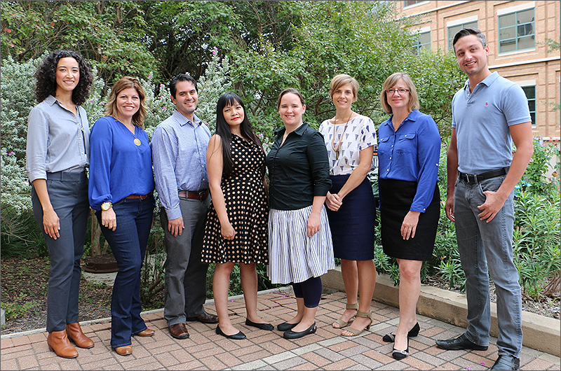

CARE is a program of the Counseling and Mental Health Center that was created in collaboration with the Office of the Provost. CARE counselors are located within the colleges they serve. They are licensed mental health professionals and work with students who have been referred by faculty and staff.
CARE’s primary mission is to provide access to mental health support for students who are struggling emotionally and/or academically. Our presence normalizes the counseling process and makes us readily available for services. We decrease barriers by assisting students in a location that is familiar and convenient for them. CARE counselors get to know the concerns that are unique to their college’s students. They integrate in the college and provide support and consultation on mental health issues for advisors, faculty and dean’s staff.

Laura Dannenmaier, LCSW
CMHC Assistant Director for CARE
School of Architecture
Mike Andorka, PhD
Dell Medical School
School of Nursing
School of Social Work
Aaron Evans, LPC
College of Liberal Arts
Toby Leblanc, LPC-S
College of Education
McCombs School of Business
Bernadette Pinon, LPC-S
School of Undergraduate Studies
Division of Housing and Food Service
Abby Simpson, LCSW
College of Fine Arts
Moody College of Communication
Jeni Wade, LCSW
Cockrell College of Engineering
Amy Trinh, LPC
College of Natural Sciences
For more information about the CARE Program contact:
Laura Dannenmaier, LCSW (512) 471-3115